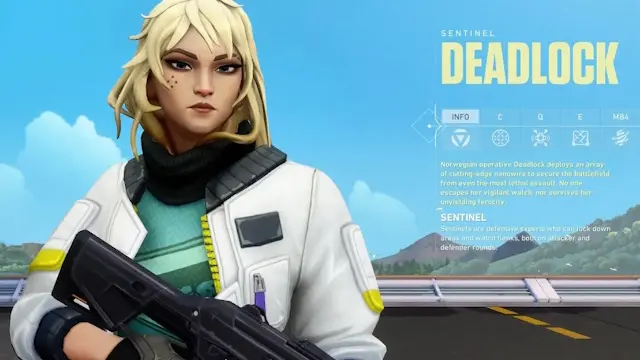
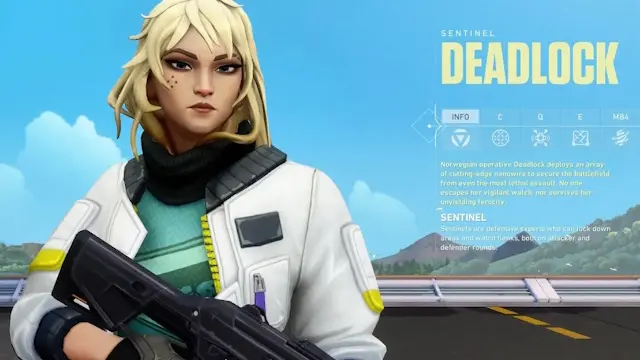

Bring Your Friends
for a 5v5 Battle
Bring Your Friends
for a 5v5 Battle


 



More than guns and bullets,
you’ll choose an Agent armed with adaptive, swift, and lethal abilities
that create opportunities to let your gunplay shine.
No two Agents play alike, just as no two highlight reels will look the same.
Valorant is a team-based first-person tactical hero shooter set in the near future.
Players play as one of a set of Agents, characters based on several countries and
cultures around the world. In the main game mode, players are assigned to either the
attacking or defending team with each team having five players on it. Agents have unique
abilities, each requiring charges, as well as a unique ultimate ability that requires
charging through kills, deaths, orbs, or objectives. Every player starts each round with
a "classic" pistol and one or more "signature ability" charges. Other weapons and ability
charges can be purchased using an in-game economic system that awards money based on the
outcome of the previous round, any kills the player is responsible for, and any objectives
completed. The game has an assortment of weapons including secondary guns like sidearms
and primary guns like submachine guns, shotguns, machine guns, assault rifles and sniper
rifles. There are automatic and semi-automatic weapons that each have a unique shooting
pattern that has to be controlled by the player to be able to shoot accurately.
It currently offers 23 agents to choose from. The player will get 5 unlocked agents
when they create their account, and will have to unlock the rest of the agents by
collecting an in-game currency called Kingdom Credits. Kingdom Credits can be
acquired by playing games or completing daily and weekly tasks, and can be spent
on unlock new agents or cosmetic items. However, within the first 28 days of release,
new Agents can only be unlocked with Valorant Points (VP), Agent Recruitment Events,
or by having a linked and active Xbox Game Pass subscription.
VP is an in-game currency that can only obtained by purchasing it with real money,
and it can be spent on cosmetic items or new agents.
Valorant was developed and published by Riot Games,
the studio behind League of Legends.
Development started in 2014,
within their research and development division.
Game director Joe Ziegler is credited with the initial idea
of Valorant while formulating potential games with other Riot developers.
David Nottingham is the creative director for Valorant.
Trevor Romleski, former League of Legends's designer and Salvatore Garozzo,
former professional player and map designer for Counter-Strike: Global Offensive are its game designers.
Moby Francke, former Valve developer,
who has been art and character designer for Half-Life 2 and Team Fortress 2, is the art director.
Valorant was developed with two main focuses: making tactical shooters and e-sports more
accessible to new players,and creating a game that would attract a large competitive scene,
while solving many of the points of criticism voiced by professional players from games in the genre.
Games aimed at large, active communities and player bases, typically free-to-play games like Fortnite or Riot's own League of Legends,
tend to put an emphasis on a wider array of system performance improvements and game stability rather than
newer technologies or graphics as a way of making sure they're as accessible as possible.
In interviews leading up to the game's launch, game director Joe Ziegler and producer Anna Donlon said that Valorant
was made for people playing their first tactical shooter just as much as it was for professional players,
and that accessibility of the game was a large priority.
Currently, there are 23 Valorant Agents split between 4 agent classes, namely Duelists, Controllers, Initiators, and Sentinels. To say one agent is better than the other is only a matter of personal preference and playing skills. However, beginners may find it easier to play with Phoenix, Sage, Reyna, and Brimstone.
To change your Valorant name, log in to your Riot account and visit the Account Management section to access the Riot ID option. Here, you can type in your new Valorant Name, and you can also change your Tagline.
Realistically, a player cannot change their region after signing up for a Riot Games account. You may use a VPN to change your region, but you’ll have to create a new account to play the game using that account. Still, you can raise a ticket with Valorant Support to get assistance with changing your region if you’ve relocated to another country or continent.
Users can exit the client using the typical manner of clicking on the close button, and it will re-initialize the Valorant game client on its next launch. But, if you have troubles with the Valorant Vanguard client, you might have to reboot your system.
Press the Esc button if you’re in a game, or click on the settings icon visible at the top right of your Valorant home screen.
1. Access the Settings menu in Valorant
2. Click on the Crosshair tab.
3. Edit your Crosshair Settings.
HRTF in Valorant helps with offering an immersive 3D audio experience that can help players precisely locate the movement of enemies by listening to the various audio cues. The HRTF option helps with improving sound accuracy in the game for some systems that don’t have advanced audio settings.
Users who need help with their Valorant Account or with the Valorant Game for any particular reason can head to the Valorant Support Page and access the Valorant Basics & FAQs section to learn more about the game. Users can also raise questions about other issues using a designated Submit a Ticket option.
Socials
Twitter
Facebook
Instagram
Youtube
Github